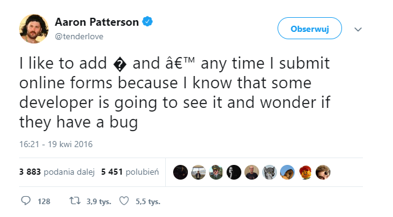

Zdjęcie
Sed quis arcu tempor, efficitur massa id, molestie mi. Vestibulum leo lectus, lobortis id mi eu, venenatis commodo magna. Donec iaculis vestibulum mauris nec fringilla. Etiam lectus lacus, ultrices id diam sed, interdum aliquam nisl. Mauris suscipit non lorem id posuere. Curabitur rutrum malesuada diam, quis malesuada metus semper varius. In hac habitasse platea dictumst. Maecenas pellentesque justo nisi, fringilla condimentum arcu tempor et.

Vestibulum ante ipsum primis in faucibus orci luctus et ultrices posuere cubilia Curae; Vestibulum nec sodales nulla. Sed mollis eros in risus semper pretium. Nam vitae tellus id turpis egestas lobortis id ut magna. Fusce vel imperdiet erat. Proin cursus arcu ipsum, quis tempus ipsum venenatis vel. Sed et iaculis sapien. Quisque vehicula felis ac nibh pulvinar tincidunt. Sed eget quam aliquet, bibendum orci at, mollis nisi. Integer sed viverra nisl. Cras ultrices posuere sollicitudin. Fusce vel fringilla est.
